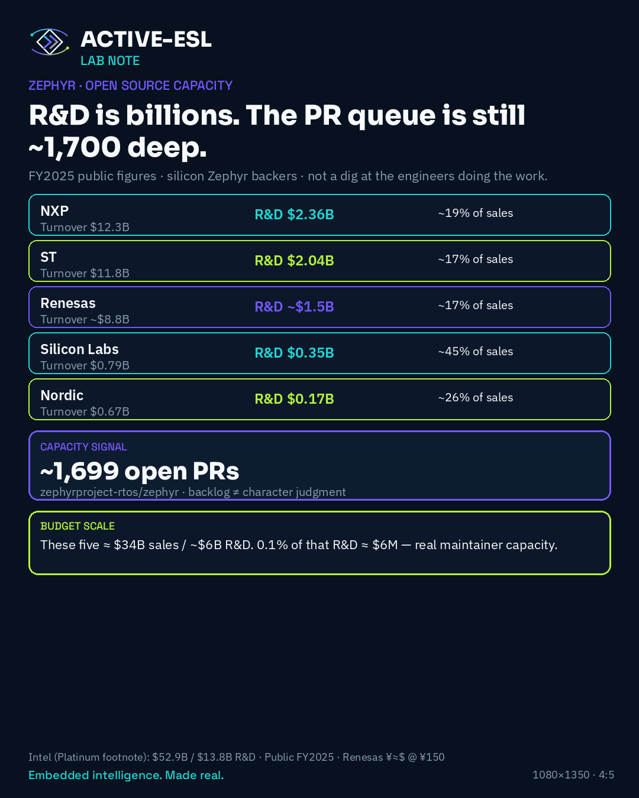

Insights · 15th August 2026
Zephyr quality needs a vendor budget line.
We ship on Zephyr. We want it to win on quality. That takes funded review and driver capacity - not heroics from the people already carrying the merge queue.

We build on Zephyr. We care that it stays shippable.
There are on the order of 1,700 open pull requests on the main Zephyr tree (checked mid-August 2026). That is not a moral failing of the engineers doing the work. It is what under-scoped capacity looks like when silicon vendors market an RTOS hard and the merge queue does not get a matching budget line.
Respect the people doing the work
Maintainers, reviewers, and driver authors are already carrying this. The backlog is not proof that “the community is lazy.” It is a capacity signal. If your board or product story depends on Zephyr, the interesting question is whether review, merge, driver quality, board support, security, and release discipline are funded like any other product KPI - or treated as free infrastructure that marketing can lean on.
The scale is not subtle
NXP, ST, Renesas, Silicon Labs, and Nordic already invest billions in R&D (FY2025 public figures; Intel sits in the Platinum tier for context). Round numbers for the five: roughly $34B combined sales and ~$6B R&D. One tenth of one percent of that R&D is on the order of $6M - meaningful maintainer capacity against a four-figure open-PR queue.
I am not claiming any vendor’s private Zephyr headcount. I am saying the public R&D scale and the public PR queue do not sit comfortably next to each other if Zephyr is meant to be a serious product path.
What the ask is
Vendors who push Zephyr should ring-fence a real OSS / Zephyr maintainer line: review capacity, driver quality, board support, release discipline. Measure it. Staff it. Do not outsource the hard part to unpaid heroics while the slide deck claims industrial readiness.
That ask is aimed at boards, product owners, and ecosystem budget holders - not at the engineers already in the queue.
Lab colour, not blame
On Active-Edge programmes we live the usual edge pain: RTIO work-queue tax, SPI/TCAN IRQ cost, the ordinary tax of getting silicon behaviour into upstream shape. None of that is unique. Upstream capacity and vendor driver quality decide whether those costs stay manageable or become a permanent tax on every product team.
What this is for
We want Zephyr to win on quality. That takes budget, not slogans. If you are living the same merge-queue reality - vendor side or product side - I would like to compare notes.